Префектура Сайтама · Огосэ · сауна и отдых
O Park OGOSE: финская сауна, горячие ванны и ночь в лесу Огосэ
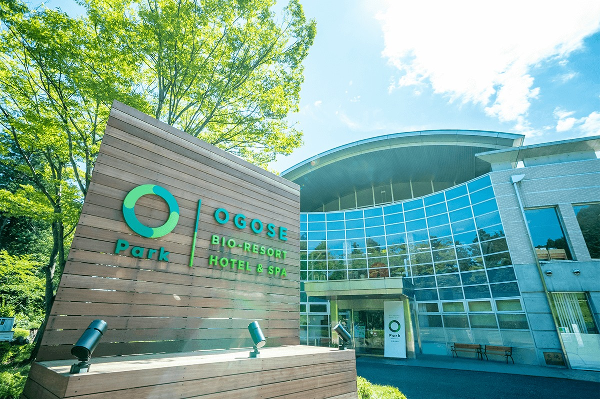
Когда становится холодно, хочется прогреться до самых костей, и лучше всего для этого подходит сауна. В городке Огосэ в префектуре Сайтама ради неё можно приехать на целый день или остаться с ночёвкой в домике с собственной парной.
Курорт
Сауна, вода и лес
В Японии сауну любят всерьёз: поклонники чередуют парную и холодную воду, добиваясь особого состояния полного расслабления, которое называют «тотоноу». BIO-RESORT HOTEL&SPA O Park OGOSE стоит в Огосэ, небольшом городке среди зелёных холмов префектуры Сайтама, и устроен как курорт, где каждый выбирает свою тему: ночёвку, барбекю или спа.
Сюда приезжают на день, чтобы попариться и полежать в горячей воде, а можно остаться на ночь в одном из домиков или шатров на территории.
Ночлег
Финский домик с собственной сауной
Самый необычный номер курорта называется «Сауна сьют кэбин». Его сделали вместе с Finlayson, старейшей текстильной маркой Финляндии, и весь домик сдаётся целиком: внутри скандинавский интерьер, своя сауна и купель с холодной водой, а на террасе можно поужинать под открытым небом.
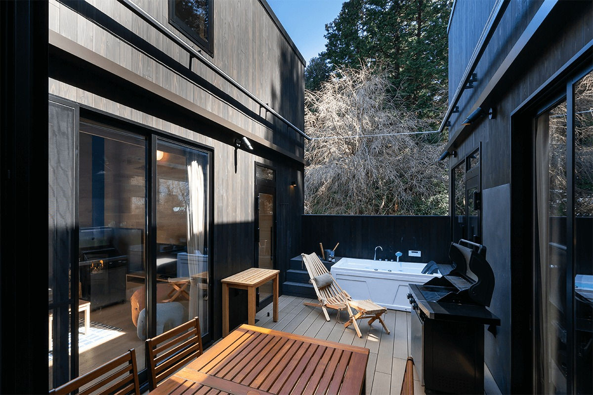
Сауна здесь полностью частная, и пока длится проживание, ею можно пользоваться как хочется: поддавать пар, поливая камни водой, или добавлять ароматную воду. Аромат выбирают при заселении из нескольких эссенций. Рекомендуем берёзу, запах настоящей северной сауны.
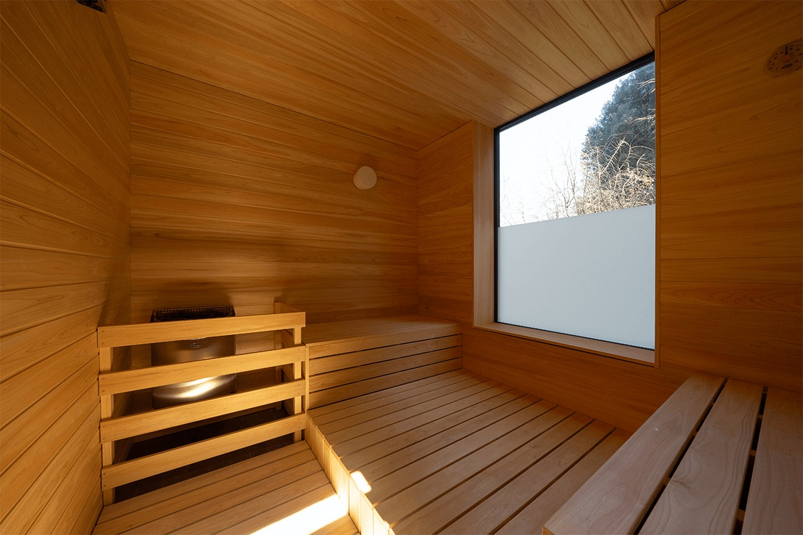
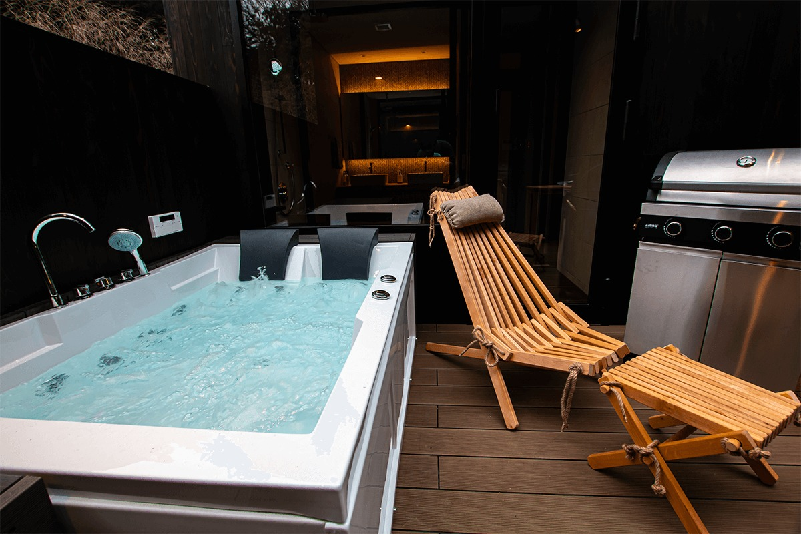
После парной можно выйти к джакузи на свежем воздухе, послушать птиц и почувствовать ветер на коже. Именно в такие минуты и приходит то самое «тотоноу».
Ужин подают на террасе номера, в духе глэмпинга в деревенских холмах: блюда меняются вместе с сезоном. Утром на завтрак свежий хлеб из печи, яйца с местной птицефермы и салат.
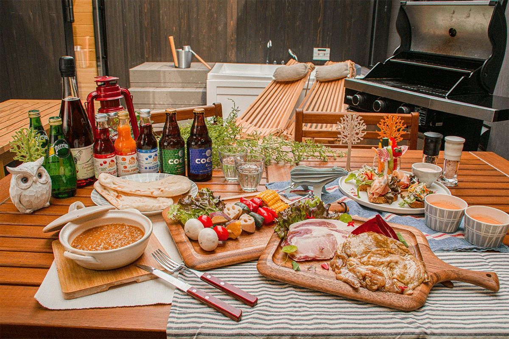
Есть и другие варианты ночлега. В «Глэмпинг кэбин» пять кроватей расставлены на разных уровнях, а при домике просторная деревянная терраса: он подходит для семей, компаний и пар. В 2021 году здесь были и шатры «Флоут доум тэнт», к ним вёл качающийся подвесной мостик. Есть ещё глэмпинг-шатры и бревенчатые домики среди деревьев.
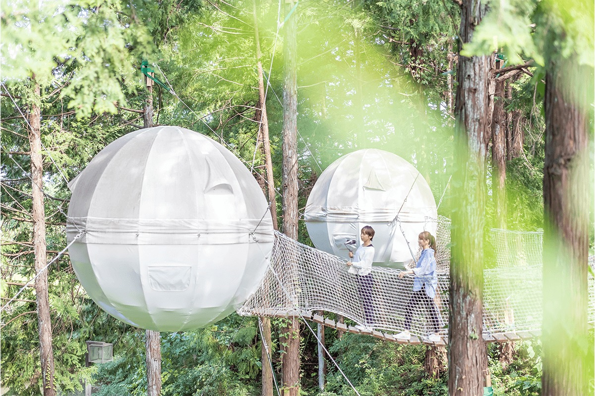
Спа
Купальники, парные и открытые ванны
На курорте есть зона, где все купаются вместе, в купальниках: семьи, пары, друзья. Сверху сюда падает дневной свет, а за окнами видна зелень.
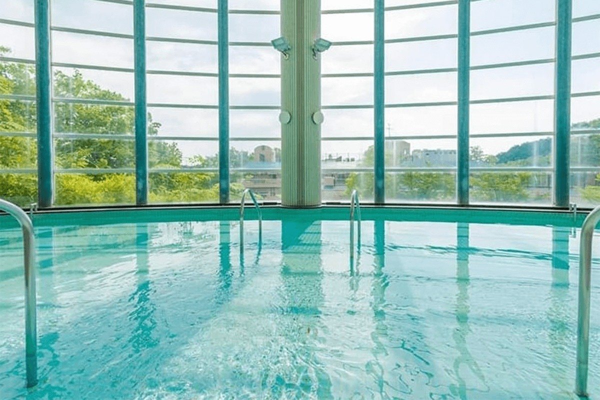
Главная ванна этой зоны называется «Тогору-ю». В воде есть кремний, поэтому она мягкая и делает кожу гладкой, а тепло после неё держится долго. Для любителей жара есть сауна с высокой температурой и паровая баня, где не так горячо, но влажно. После парной ждёт холодная купель, а рядом открытая терраса, где можно остыть на свежем воздухе. Купальник обязателен.
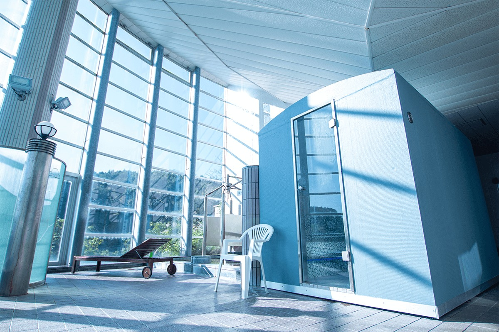
В отдельной купальне «Огосэ-но ю» есть открытая ванна из камня и ванна среди валунов, их чередуют помесячно. Вечером в ясную погоду в ванне среди камней можно лежать и смотреть на звёзды. В закрытом зале есть ещё ванна с пузырьками, которые разминают уставшие мышцы.
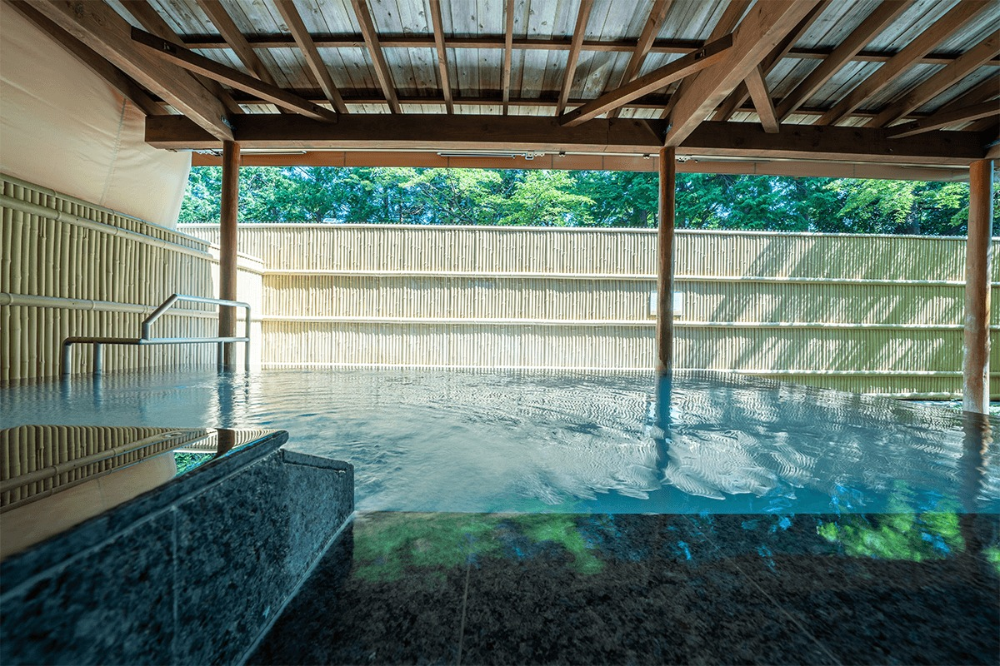
За 300 иен к входному билету (цена 2021 года) можно пользоваться залом «гамбаню», где лежат на тёплых каменных плитах. Ограничений по времени и числу заходов нет, одежду и большое полотенце выдают. Кроме общего зала есть отдельный, только для женщин. Зал открыт для гостей с 12 лет, и только вместе с обычным входным билетом.
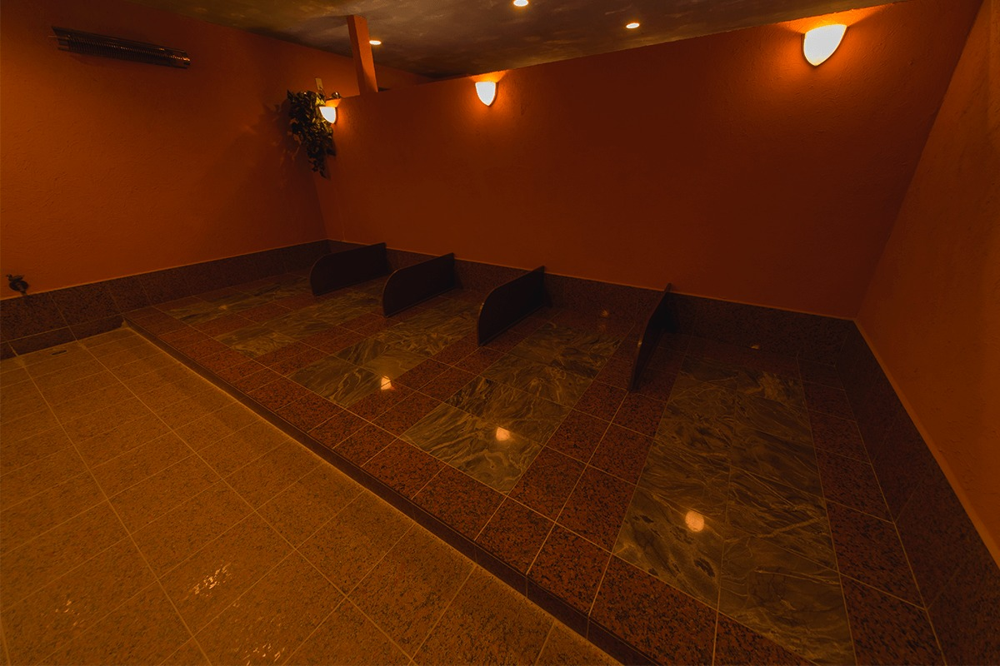
Еда
Ресторан MORINIWA
После бани можно пообедать в ресторане MORINIWA. Здесь готовят из сезонных продуктов и того, что растёт в окрестных холмах.
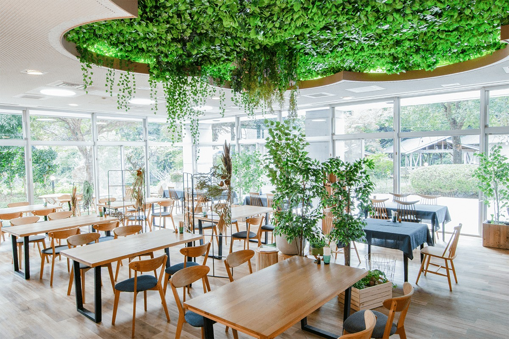
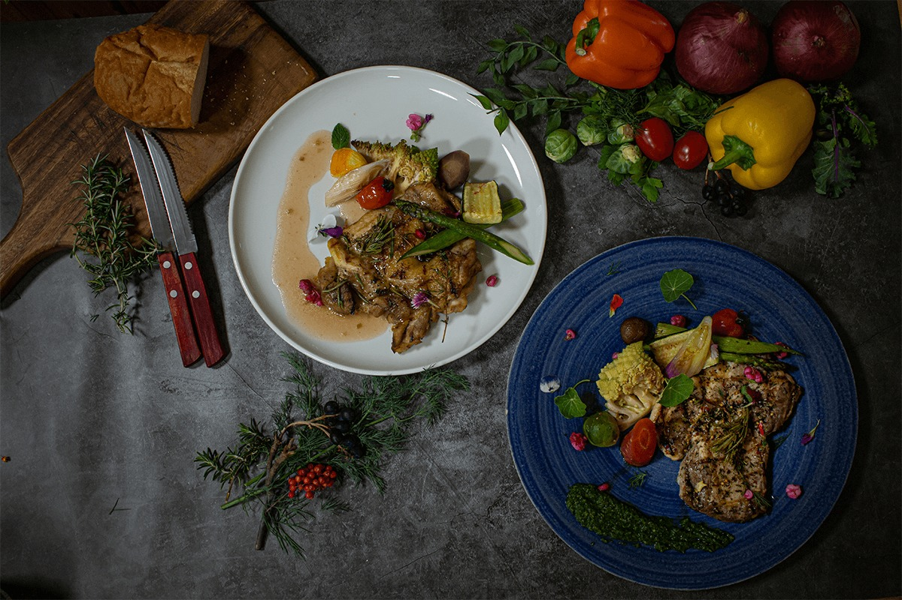
BIO-RESORT HOTEL&SPA O Park OGOSE
- Адрес
- префектура Сайтама, уезд Ирума, Огосэ, Уэно, 3083-1
- Телефон
- +81 49-292-7889
- Часы работы
- 10:00–22:00 (последний вход 21:30); купальная зона 10:00–21:30; зал «гамбаню» 10:00–21:00 (последний вход 20:30); ресторан MORINIWA 11:00–21:00 (последний заказ 20:30)
- Выходные
- второй четверг месяца
- Цены / Вход
- зал «гамбаню» 300 иен к входному билету
- Сайт
- opark.jp